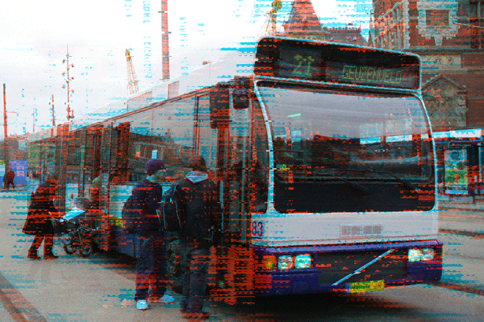

Terugspoelen
Terugspoelen
Terugspoelen
In een babywinkel op het Bos en Lommerplein koop ik babyschoentjes.
Teleurgesteld verlaat ik de bibliotheek. Dat geloof je toch niet? Ik ben de hele tijd al op de tweede verdieping aan het zoeken. Mailtje van het magazijn: Stijloefeningen ligt waar het hoort te liggen: op de tweede verdieping. Ik wacht een kwartiertje. Ik stuur een mail naar het magazijn, of zij nog een exemplaar hebben. De medewerker raadt me aan een mailtje te sturen naar het magazijn, die hebben waarschijnlijk nog wel een exemplaar. Hij zoekt met me mee, maar Stijloefeningen is nergens te vinden. De medewerker tikt wat in op zijn computer en loopt zonder iets te zeggen naar de boeken van Queneau. Ik loop naar een medewerker en vertel dat ik Stijloefeningen niet kan vinden, terwijl het boek volgens de online catalogus wel degelijk aanwezig is. Volgens de online catalogus van de OBA is Stijloefeningen wel degelijk aanwezig en ligt het op de daartoe bestemde plek. Ik tik ‘Stijloefeningen’ en ‘Queneau’ in. Voor de zekerheid loop ik naar een computer en open ik de online catalogus van OBA. Omdat het boek wellicht niet goed is teruggezet, kijk ik ook nog even bij de P en R, maar niks. Er liggen aardig wat boeken van Queneau, maar uitgerekend Stijloefeningen zit er niet bij. Boven, op de tweede verdieping, begin ik te zoeken bij de Q van Queneau.
Zonder me te bedanken rent de vrouw van me weg, achter de Renault aan. Ze draait zich om. Ze glimlacht nogmaals, een tikje zenuwachtig. Terwijl ik vertel dat ze op de Raadhuisstraat moet zijn, kijkt ze weer om naar de Renault. Ze glimlacht en houdt me een briefje voor waarop ik twee adressen lees. Achter haar rijdt een Renault achteruit rijdend van ons weg. De vrouw kijkt om, enigszins nerveus. ‘Nee,’ zeg ik, ‘dit is de bibliotheek.’ Het postkantoor staat hier al heel lang niet meer. Ze vraagt of dit het postkantoor is. Ze heeft pikzwart, weelderig krullend haar. Vlak voordat ik de bibliotheek wil betreden, word ik aangeklampt door een vrouw.
Drillende drilboren en heiende heipalen overstemmen mijn gedachtes. Wat een zooitje. Aan weerszijde bevinden zich immense bouwputten. Ik loop over een modderige plank. Daarom ben ik nu op weg naar de Openbare Bibliotheek Amsterdam om het boek te lenen. Ik ben al een tijdje op zoek naar Stijloefeningen van Raymond Queneau. De mensen kijken naar de grond. Het regent en het waait. Ik loop over het stationsplein. Mijn zoontje slaapt in zijn wagentje. Halte Centraal Station. Het is rond het middaguur. Lijn 21. Ik stap uit de bus.